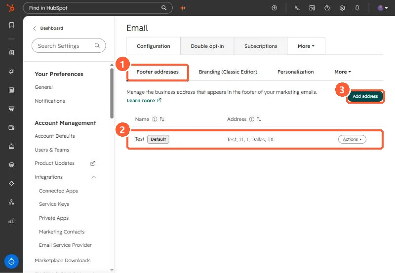
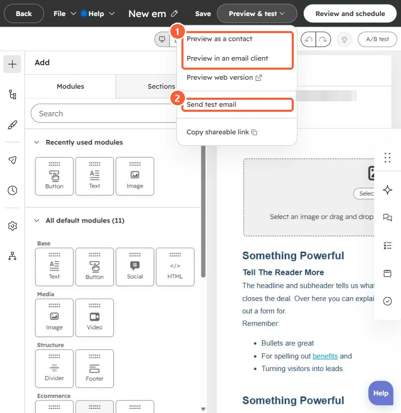
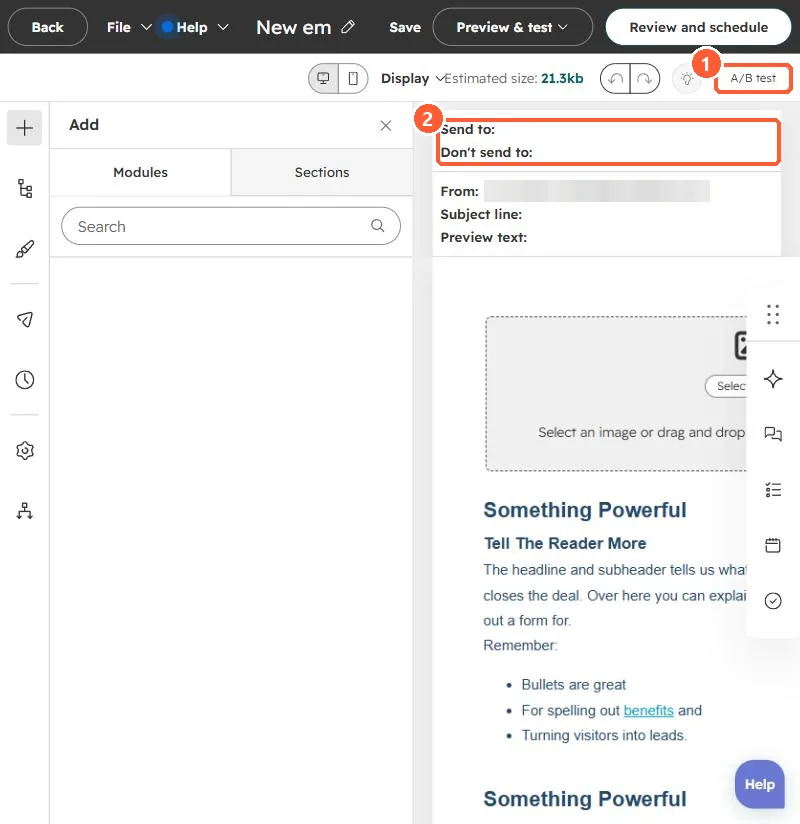
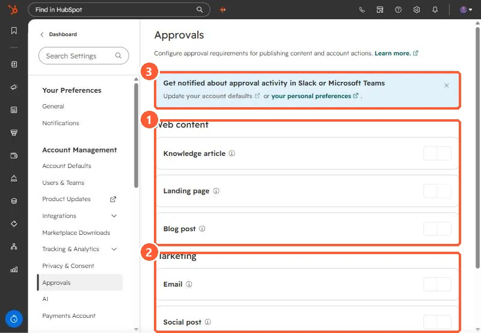
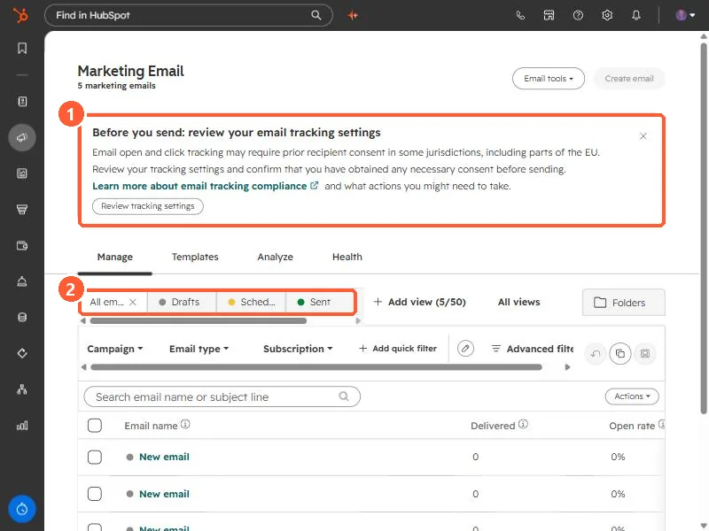
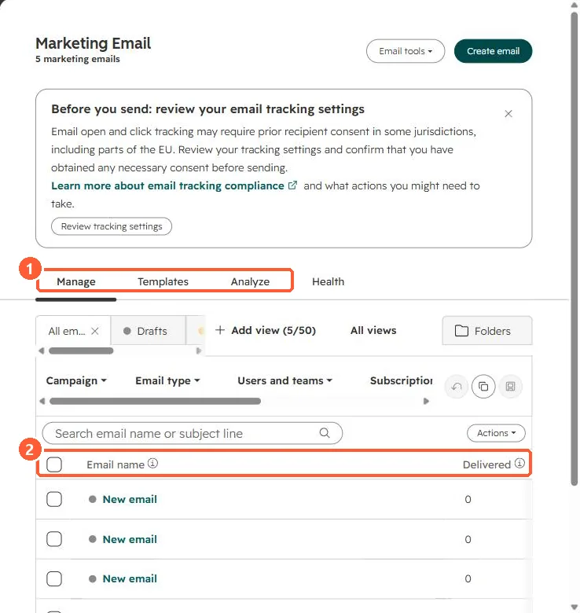

Short answer
Before the first send, set the footer address and subscription types in Settings, Marketing, Email. Build in the drag and drop editor, set token defaults so links and greetings never break, and use Preview & test before every send (test emails arrive from noreply@hubspot.com, so do not judge the From name there). A/B tests need Marketing Hub Professional, approvals need Enterprise, and a scheduled or still-processing email can be cancelled until it finishes sending. Receipts, password resets and other transactional messages belong on the Transactional Email Add-On, not in a marketing email.
1. Set up once: footer address and subscription types
Every marketing email footer pulls the business address from Settings, Marketing, Email, Configuration, Footer addresses (1). The default address (2) is used unless an email picks another location, and Add address (3) adds more. Required fields are company name, address, city and postal code. Multiple office locations need Marketing Hub Enterprise.


Check it now. Whatever is saved there shows on every marketing email, and my demo portal's default still says Test. If you build a custom footer in the design manager, it must keep the address and unsubscribe tokens. Subscription types control who can receive what: see subscription types and double opt-in.
2. Build the email
- Fonts. Custom fonts show in Apple Mail and partly in Samsung Mail, but not in Gmail, Outlook or most mobile web clients. Those show the fallback, so pick a fallback with a similar x-height and weight. Google Fonts are not available for custom modules in email templates. Brand fonts live in the brand kit.
- Personalized links. Button and image modules can use links built from personalization tokens, so each contact lands on a page for them. Give every token a default value, or contacts with an empty property get a broken link.
- CTAs. Embedded CTAs work in drag and drop marketing emails and keep the offer's results in one place across emails and pages. External pages need the HubSpot tracking code to track them.
- Programmable emails. HubL in a coded template can pull CRM data into the email. Professional can read standard objects such as contacts, companies and products. Enterprise adds HubDB tables and custom objects. Each CRM function lowers the recipient cap: one function allows 500,000 recipients, two 250,000, three 165,000, four 125,000, and five (the maximum) 100,000. Programmable emails that use CRM functions cannot be A/B tested and send more slowly.
{% set product = crm_object("product", 2444498793, "name,description,price") %}
Name: {{ product.name }}
Price: {{ product.price }}That is HubSpot's own example from the developer docs. A coded template opts in with isEnabledForEmailV3Rendering: true.
3. Recipients, exclusions and replies
On a regular marketing email, pick the segments to send to and the segments or contacts to exclude in Send to and Don't send to. Automated emails ignore those fields: the workflow's enrollment decides who gets them, so put exclusions in the workflow's criteria. HubSpot also leaves out unengaged, bounced and quarantined contacts on its own. See marketing email deliverability for why a send reaches fewer people than the segment.
Replies go to the From address unless you add a custom reply-to address. Each email has one reply-to, so use a shared or distribution address when several people need replies. To log replies, connect that inbox to HubSpot. Some mail providers still send out-of-office and other automatic replies to the original From address.
4. Preview and test
Open Preview & test in the editor. The menu has Preview as a contact, Preview in an email client and Preview web version (1), plus Send test email (2) and Copy shareable link for reviewers who do not log in.


In the test dialog you can pick a contact to send it as, which shows their tokens and smart content in a real inbox. HubSpot's KB says test emails come from noreply@hubspot.com with the From name Marketing Email Preview Send. That is normal and not what your contacts will see.
What to check on every test: token defaults, smart content for each audience, every link, the footer address, and how the email looks in Outlook and Gmail with the fallback font.
5. A/B tests
Click A/B test at the top of the editor (1) to create version B. Then set:


- How many recipients should receive the A/B test: that share gets A and B, and everyone else gets the winner.
- Winning metric: open rate, click rate or click-through rate. Pick click rate. Opens are distorted by privacy features and scanners.
- Test length in hours.
- Fallback version: sent to the rest if the result is inconclusive.
It needs Marketing Hub Professional or Enterprise, and HubSpot recommends at least 1,000 contacts for useful results. Change one thing per test, such as the subject line or one block, so you know what made the difference. Automated emails can be A/B tested through workflows.
6. Approvals
With Enterprise, you can require approval before marketing emails are published. Turn it on under Settings, Approvals: web content (1), marketing (2), and notifications to Slack or Teams (3).


Only assigned approvers can publish pending content. RSS and blog subscription emails need approval once, not on every send. Name more than one approver so a vacation does not stop the newsletter.
7. Schedule and cancel
Emails can go out now, at a set time, or by each recipient's time zone. The email list (2) shows scheduled, sent and draft emails.


- Scheduled (including time zone sends): open the email, go to the Schedule tab, and select Send now. HubSpot's KB gives this as the way to cancel the scheduled send.
- Still processing: on the performance page, Actions, Cancel processing. Contacts who already got it keep it.
- Finished: it cannot be cancelled.
To finish a cancelled send without emailing anyone twice, clone the email and put the segment of contacts who were already sent the original in Don't send to.
8. Automation after the send
Simple workflows inside the email editor can act on what recipients do, for example adding people who clicked to a segment, then waiting, sending a follow-up, notifying a teammate or creating a task. HubSpot redesigned this in May 2026 with templates and inline setup in the editor, for Marketing Hub Starter and above. More than one simple workflow per email needs Professional or Enterprise, and cloning an email can copy its simple workflows. For one-to-one sales follow-up, use sequences instead.
For a blog hosted outside HubSpot, an RSS email sends subscribers new posts from the feed. Featured images are not added automatically, so include them in the feed, and each send only includes posts that are new since the last one.
9. Transactional email
Receipts, invoices, account signups and password changes are transactional: relationship emails triggered by something the recipient did. The Transactional Email Add-On sends them from a dedicated IP address that carries only transactional email, which HubSpot says helps manage your domain reputation for inbox placement. It needs Marketing Hub Professional or Enterprise and is bought through your Customer Success Manager or sales rep. You can send three ways:
- from the email tool, directly or in a workflow,
- the single-send API, or
- the SMTP API.


It is not a loophole. Keep the content to the transaction. A promotion inside a receipt still needs marketing consent, and marketing email on a dedicated IP needs the separate dedicated IP add-on.
10. What is changing for 2027
- AI-written emails. HubSpot's Fall 2026 Spotlight introduced nurture emails written for each recipient. It runs on HubSpot credits, see nurture agent credits. The testing and approval steps above matter more, not less, when the copy is generated.
- The editor spreads. In June 2026 the drag and drop marketing email editor became available for help desk Ticket Received and Ticket Closed messages without a Marketing Hub subscription, so service teams will meet the same editor.
- Mailbox rules keep tightening. Gmail and Outlook.com already require SPF, DKIM, DMARC and one-click unsubscribe from bulk senders. See deliverability for the details.
- Programmable emails and the API move to dated versions. Any script using the single-send or marketing email APIs should plan for HubSpot's date-based API versions. See API rate limits and versioning.
Common questions
My test email came from noreply@hubspot.com. Is my From address broken?
No. Test sends always use that address and the From name Marketing Email Preview Send. Check the real From line in the editor header or send to a small test segment instead.
Can I stop an email that is already going out?
Yes, while it is still processing: performance page, Actions, Cancel processing. Anyone who already received it keeps it.
Why is my custom font showing as Arial in Gmail?
Gmail and Outlook do not load custom fonts in email. They show your fallback. Choose a fallback that looks close and check it in the client preview.
Can I exclude a segment from an automated email?
Not in the email. Add the exclusion to the workflow's enrollment or as a branch before the send action.
Sources
- HubSpot Knowledge Base: Create and send marketing emails
- HubSpot Knowledge Base: Edit email footer addresses
- HubSpot Knowledge Base: Use fonts in HubSpot
- HubSpot Knowledge Base: Personalize links in marketing emails
- HubSpot Knowledge Base: Add CTAs to your content
- HubSpot Knowledge Base: Create programmable emails
- HubSpot developer docs: Emails with programmable content
- HubSpot Knowledge Base: Exclude segments or contacts
- HubSpot Knowledge Base: Add custom reply-to addresses
- HubSpot Knowledge Base: Send a test marketing email
- HubSpot Knowledge Base: Run A/B tests for marketing emails
- HubSpot Knowledge Base: Request approval to send a marketing email
- HubSpot Knowledge Base: Cancel a scheduled or processing marketing email
- HubSpot Knowledge Base: Use automation with emails
- HubSpot Knowledge Base: RSS emails for external blogs
- HubSpot Knowledge Base: Send transactional emails
- HubSpot Community: May 2026 product updates
- HubSpot Community: June 2026 product updates
- HubSpot: Fall 2026 Spotlight
- HubSpot Community: Transactional email vs operational email